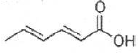

식품기사 (2018-03-04 기출문제)
1과목: 식품위생학
1. Clostridium botulinum의 아포형 중에서 내열성이 가장 약한 것은?
- A 형균
- B 형균
- F 형균
- E 형균
(정답률: 71%)

2. 살균∙소독에 대한 설명으로 옳지 않은 것은?
- 열탕 또는 증기소독 후 살균된 용기를 충분히 건조해야 그 효과가 유지된다.
- 우유의 저온살균은 결핵균 살균을 목적으로 한다.
- 자외선 살균은 대부분의 물질을 투과하지 않는다.
- 방사선은 발아억제효과만 있고 살균효과는 없다.
(정답률: 79%)
3. 식품의 제조∙가공 중에 생성되는 유해물질에 대한 설명으로 틀린 것은?
- 벤조피렌(benzopyrene)은 다환방향족 탄화수소로서 가열처리나 훈제공정에 의해 생성되는 발암물질이다.
- MCPD(3-monochloro-1,2-propandiol)는 대두를 산처리하여 단백질을 아미노산으로 분해하는 과정에서 글리세롤이 염산과 반응하여 생성되는 화합물로서 발효간장인 재래간장에서 흔히 검출된다.
- 아크릴아마이드(acrylamide)는 아미노산과 당이 열에 의해 결합되는 마이야르 반응을 통하여 생성되는 물질로 아미노산 중 아스파라긴산이 주 원인물질이다.
- 니트로사민(nitrosamine)은 햄이나 소시지에 발색제로 사용하는 아질산염의 첨가에 의해 발생된다.
(정답률: 70%)
4. 분변 오염의 지표로 이용되는 대장균군의 MPN(Most Probable Number) 검사에 관한 설명으로 옳은 것은?
- 검체 10mL 중 있을 수 있는 대장균군수
- 검체 100mL 중 있을 수 있는 대장균군수
- 검체 1000g 중 있을 수 있는 대장균군수
- 검체 10g 중 있을 수 있는 대장균군수
(정답률: 88%)
5. 돼지를 중간숙주로 하며 인체유구낭충증을 유발하는 기생충은?
- 간디스토마
- 긴촌충
- 민촌충
- 갈고리촌층
(정답률: 85%)
6. 방사성물질 누출사고 발생 시 식품안전측면에서 관리해야 할 핵종 중 대표적 오염지표물질로써 우선 선정하는 방사성 핵종은?
- 우라늄, 코발트
- 플루토늄, 스트론튬
- 요오드, 세슘
- 황, 탄소
(정답률: 82%)
7. 저렴하고 착색성이 좋아 단무지와 카레가루 등에 사용되었던 염기성 황색색소로 발암성등 화학적 식중독 유발가능성이 높아 사용이 금지되고 있는 것은?
- Auramine
- Rhodamine B
- Butter yellow
- Silk scarlet
(정답률: 82%)
8. 콜레라에 대한 설명으로 틀린 것은?
- 주증상은 심한 설사이다.
- 내열성은 약하지만 일반 소독제에 대해서는 저항력이 강한 편이다.
- 외래 감염병으로 검역 대상이다.
- 비브리오속에 속하는 세균이다.
(정답률: 74%)
9. 장티푸스에 대한 설명으로 옳은 것은?
- 병원균은 Salmonella paratyphi이다.
- 잠복기는 2 ~ 3일 전후이다.
- 쌀뜨물과 같은 심한 설사를 한다.
- 완치된 후에도 보균하여 균을 배출하는 경우도 있다.
(정답률: 71%)
10. 미생물에 의한 손상을 방지하여 식품의 저장수명을 연장시키는 식품첨가물은?
- 산화방지제
- 보존료
- 살균제
- 표백제
(정답률: 88%)
11. 식품의 기준 및 규격에서 식품종의 분류에 해당하는 것은?
- 음료류
- 햄류
- 조미식품
- 과채주스
(정답률: 67%)
12. D-sorbitol 을 상업적으로 이용할 때 합성하는 방법은?
- 과황산암모늄을 전해액에서 분리하여 정제한다.
- 계피를 원료로 하여 산화시켜 제조한다.
- 포도당으로부터 화학적으로 합성한다.
- L-주석산을 탄산나트륨으로 중화하여 농축한다.
(정답률: 73%)
13. 사과주스에 기준규격이 설정된 곰팡이 독소로 오염된 맥아뿌리를 사료로 먹은 젖소가 집단식중독을 일으킨 곰팡이 독소는?
- Patulin
- Afaltoxin
- Ochratoxin
- Zearalenone
(정답률: 65%)
14. 식품제조가공 작업장의 위생관리에 대한 설명이 옳은 것은?
- 물품검수구역, 일반작업구역, 냉장보관구역 중 일반작업구역의 조명이 가장 밝아야 한다.
- 화장실에는 손을 씻고 물기를 닦기 위하여 깨끗한 수건을 비치하는 것이 바람직하다.
- 식품의 원재료 입구와 최종제품 출구는 반대방향에 위치하는 것이 바람직하다.
- 작업장에서 사용하는 위생 비밀장갑은 파손되지 않는 한 계속 사용이 가능하다.
(정답률: 77%)
15. 방사성 물질로 오염된 식품이 인체 내에 들어갈 경우, 그 위험성을 판단하는 데 직접적인 영향이 없는 인자는?
- 방사선의 종류와 에너지의 크기
- 식품 중의 수분활성도
- 방사능의 물리학적 및 생물학적 반감기
- 혈액 내에 흡수되는 속도
(정답률: 88%)
16. 식품공장에서 미생물 수의 감소 및 오염물질 제거 목적으로 사용하는 위생처리제가 아닌 것은?
- Hypochlorite
- Chlorine dioxide
- Ethanol
- EDTA
(정답률: 75%)
17. 식품의 기준 및 규격에서 곰팡이 독소의 총 아플라톡신에 해당하지 않는 것은?
- B1
- G1
- F1
- G2
(정답률: 72%)
18. 식품의 방사선 조사에 대한 설명 중 틀린 것은?
- 코발트60의 감마선이 이용된다.
- 식품의 발아 억제, 숙도 조절을 목적으로 사용한다.
- 일단 조사한 식품에 문제가 있으면 다시 조사하여 사용할 수 있다.
- 완제품의 경우 조사처리된 식품임을 나타내는 문구 및 조사도안을 표시하여야 한다.
(정답률: 88%)
19. 안전성 관련 용어의 설명으로 옳은 것은?
- GRAS : 해로운 영향이 나타나지 않고 다년간 사용되어 온 식품첨가물에 적용되는 용어
- LC50 : 시험 동물의 50%가 표준수명 기간 중에 종양을 생성케 하는 유독물질의 양
- LD50 : 노출된 집단의 50% 치사를 일으키는 식품 또는 음료수 중 유독물질의 농도
- TD50 : 노출된 집단의 50% 치사를 일으키는 유독물질의 양
(정답률: 66%)
20. 식품제조시설의 공기살균에 가장 적합한 방법은?
- 승홍수에 의한 살균
- 열탕에 의한 살균
- 염소수에 의한 살균
- 자외선 살균등에 의한 살균
(정답률: 89%)
2과목: 식품화학
21. 단백질의 구조와 관계 없는 것은?
- Peptide 결합
- S-S 결합
- 수소 결합
- 삼중 결합
(정답률: 72%)
22. 맥주를 제조함에 있어 전분을 발효성 당으로 분해하며 전분에 의한 혼탁을 제거할 목적으로 이용되는 효소는?
- β-amylase
- tannase
- invertase
- lipase
(정답률: 72%)
23. GC와 HPLC에 대한 설명으로 틀린 것은?
- GC는 주로 휘발성 물질의 분석에, HPLC는 비휘발성 물질의 분석에 활용된다.
- GC는 이동상이 기체이고, HPLC는 이동상이 액체이다.
- HPLC는 GC보다 시료 회수가 어렵다.
- 일반적으로 GC의 민감도가 HPLC보다 높다.
(정답률: 83%)
24. 게, 새우 등의 갑각류 및 곤충의 껍데기에 존재하며 산∙알칼리에 용해되는 탄수화물은?
- 헤미셀룰로오스(hemicellulose)
- 키틴(chitin)
- 글라이코겐(glycogen)
- 프럭탄(fructan)
(정답률: 91%)
25. 식품 내 수분의 증기압( )과 같은 온도에서의 순수한 물의 최대 수증기압( )으로부터수분활성도를 구하는 식은?
- P+P0
- P×P0
- P÷P0
- P0-P
(정답률: 87%)
26. oil in water(O/W)형의 유화액은?
- 우유
- 버터
- 마가린
- 옥수수 기름
(정답률: 86%)
27. 인공 감미료인 아스파탐의 설명 중 틀린 것은?
- 설탕의 200배 정도의 단맛을 나타낸다.
- 설탕, 포도당, 과당 및 사카린 등과 함께 사용하면 상승작용을 나타낸다.
- 높은 온도에서 안정하여 가열 가공공정을 거치는 식품에 적합하다.
- 수용액 상태로 있으면 메틸에스테르 결합이 끊어져 맛이 없는 형태로 바뀐다.
(정답률: 59%)
28. 아린맛 성분인 호모젠틴스산(homogentisic acid)은 어떤 아미노산의 대사과정에서 생성 되는가?
- betaine
- phenylalanine
- glutamine
- glycine
(정답률: 60%)
29. 배, 양파는 흰색이나 배즙, 양파즙은 갈색이다. 이러한 변화를 유발하는 화학반응에 대한 설명으로 틀린 것은?
- 아미노카보닐 반응에 의한 환원당과 자유 아미노기 사이의 반응 결과이다.
- 당과 아민의 축합반응 및 Amadori 전위 등의 초기 단계를 거친다.
- Strecker 반응에 의해 아미노산이 분해되면서 저급알데히드와 일산화탄소가 발생한다.
- 최종 색소는 멜라노이딘(melanoidin)이라는 갈색의 질소 중합체 및 혼성중합체이다.
(정답률: 68%)
30. 외부에서 힘을 가했을 때 식품의 형태가 변형되었다가 가해진 압력을 제거하면 다시 원래의 모습으로 돌아가려는 성질은?
- 점성
- 탄성
- 소성
- 항복치
(정답률: 83%)
31. 유지를 가열할 떄 유지의 표면에서 엷은 푸른 연기가 발생할 때의 온도를 무엇이라 하는가?
- 발연점
- 연화점
- 연소점
- 인화점
(정답률: 78%)
32. 식품의 관능검사에서 특성차이검사에 해당하는 것은?
- 단순차이검사
- 일-이점검사
- 이점비교검사
- 삼점검사
(정답률: 74%)
33. 다음 중 비타민A의 함량이 가장 높은 식품은?
- 간유
- 당근
- 김
- 오렌지
(정답률: 67%)
34. 단당류 분자의 주요 화학 반응에서 하이드록시기와 가장 거리가 먼 것은?
- 사이아노하이드린 생성 및 기타 친핵체의 첨가
- 에스터 형성
- 고리 아세탈 생성
- 카르보닐기로의 산화
(정답률: 53%)
35. 두류 식품의 제한아미노산으로 문제 시 되는 것은?
- 메티오닌(methionine)
- 라이신(lysine)
- 아르기닌(arginine)
- 트레오닌(threonine)
(정답률: 70%)
36. 지용성 비타민의 특성이 아닌 것은?
- 기름과 유기용매에 녹는다.
- 결핍증세가 서서히 나타난다.
- 비타민의 전구체가 없다.
- 1일 섭취량이 필요 이상일 때는 체내에 저장된다.
(정답률: 78%)
37. 당알콜 중 솔비톨이 식품에서 이용되는 특성이 아닌 것은?
- 인체내 흡수가 빠르다.
- 열량이 낮다.
- 식품의 건조를 막아준다.
- 상쾌한 청량감을 부여한다.
(정답률: 53%)
38. 전분의 노화현상에 대한 설명으로 틀린 것은?(문제 오류로 3번 보기의 20 뒤의 단위가 없습니다. 정확한 내용을 아시는분께서는 오류신고를 통하여 내용 작성 부탁 드립니다. 정답은 3번 입니다.)
- 옥수수가 찰옥수수보다 노화가 잘 된다.
- amylase 함량이 많을수록 노화가 빨리 일어난다.
- 20 ℃에서 노화가 가장 잘 일어난다.
- 30~60%의 수분 함량에서 노화가 가장 잘 일어난다.
(정답률: 82%)
39. 플라보노이드(Flavonoid)계 색소가 아닌 것은?
- 아피제닌(apigenin)
- 라이코펜(lycopene)
- 나린진(naringin)
- 루틴(rutin)
(정답률: 62%)
40. 무미, 무취이며 항균력은 강하진 않지만 곰팡이, 효모, 호기성균 등의 미생물에 유효성을 나타내며, 치즈나 과실주에 사용되는 아래와 같은 구조를 가진 보존료는?

- 소르빈산
- 안식향산
- 자몽 종자 추출물
- EDTA
(정답률: 67%)
3과목: 식품가공학
41. 육류 가공 시 보수성에 영향을 미치는 요인과 가장 거리가 먼 것은?
- 근육의 pH
- 유리아미노산의 양
- 이온의 영향
- 근섬유간 결합상태
(정답률: 60%)
42. 정미의 도정률(정백률)은?
- (현미량/정미량)×100
- (정미량/현미량)×100
- (탄수화물양/현미량)×100
- (현미량/탄수화물양)×100
(정답률: 80%)
43. 종국(seed koji) 제조 시 목회(나무 탄 재)를 첨가하는 목적은?
- 증자미의 수분 조절
- 유해 미생물의 발육 저지
- 코지 균의 접종 용이
- 표면에 표자 착생 용이
(정답률: 75%)
44. 물을 탄 우유의 판별법으로 부적당한 것은?
- 비점 측정
- 빙결점 측정
- 지방 측정
- 점도 측정
(정답률: 63%)
45. 우유의 살균여부를 판정하는데 이용되는 방법은?
- 알코올 테스트
- 산도 테스트
- 비중 테스트
- 포스파타아제 테스트
(정답률: 77%)
46. 동결란 제조 시 노른자의 젤화가 일어나 품질이 저하되는 것을 방지하기 위하여 첨가하는 물질이 아닌 것은?
- 소금
- 설탕
- 덱스트린
- 글리세린
(정답률: 50%)
47. 전분유에서 전분입자를 분리하는 방법이 아닌 것은?
- 탱크 침전식
- 테이블 침전식
- 원심 분리식
- 진공 농축식
(정답률: 69%)
48. 유지 추출 용매의 구비조건이 아닌 것은?
- 기화열과 비열이 작아 회수하기 용이할 것
- 인화, 폭발성, 독성이 적을 것
- 모든 성분을 잘 추출, 용해시킬 수 있을 것
- 유지와 추출박에 이취, 이미가 남지 않을 것
(정답률: 82%)
49. 마이크로파 가열의 특징이 아닌 것은?
- 빠르고 균일하게 가열할 수 있다.
- 침투 깊이에 제한없이 모든 부피의 식품에 적용 가능하다.
- 식품을 용기에 넣은 채 가열이 가능하다.
- 조작이 간단하고 적응성이 좋다.
(정답률: 80%)
50. 과일잼의 가공 시 농축공정 중 농축률이 높아짐에 따라 온도가 고온으로 상승한다. 고온으로 장시간 존재할 때 나타나는 변화가 아닌 것은?
- 방향성분이 휘발하여 이취를 낸다.
- 색소의 분해와 갈변반응을 일으켜 색의 저하를 가져온다.
- 설탕의 전화가 진행되어 엿 냄새가 감소한다.
- 펙틴의 분해에 의해 젤리화하는 힘이 감소된다.
(정답률: 75%)
51. 지방함량 20%인 쇠고기 20kg과 지방함량 30%인 돼지고기를 혼합하여 지방함량 22%의 혼합육을 만들고자 할 때 필요한 돼지고기의 양은?
- 5.0kg
- 6.7kg
- 7.5kg
- 10.0kg
(정답률: 50%)
52. 육제품의 훈연에 대한 설명을 틀린 것은?
- 훈연은 산화작용에 의하여 지방의 산화를 촉진하여 훈제품의 신선도가 향상된다.
- 염지에 의하여 형성된 염지육색이 가열에 의하여 안정된다.
- 대부분의 제품에서 나타나는 적갈색은 훈연에 의하여 강하게 나타난다.
- 연기성분 중 페놀(phenol)이나 유기산이 갖는 살균작용에 의하여 표면의 미생물을 감소시킨다.
(정답률: 72%)
53. 환경기체조절포장(MAP: modified atmosphere packaging)과 관련하여 가장 거리가 먼 것은?
- 초기 기계 장치비와 유지비가 적게 든다.
- CA 저장법의 일종이다.
- 포장재의 종류와 두께, 온도에 의하여 식품의 변질 정도가 결정된다.
- 일반적인 대상 식품인 과일의 발생 기체의 양과 종류에 의하여 변질 정도가 결정된다.
(정답률: 79%)
54. 콩 단백질의 특성과 관계가 없는 것은?
- 콩 단백질은 묽은 염류용액에 용해된다.
- 콩을 수침하여 물과 함께 마쇄하면, 인산칼륨 용액에 콩 단백질이 용출된다.
- 콩 단백질은 90%가 염류용액에 추출되며, 이중 80% 이상이 glycinin이다.
- 콩단백질의 주성분인 glycinin은 양(+)전하를 띠고 있다.
(정답률: 78%)
55. 연제품(surimi)의 가공 원리와 가장 거리가 먼 것은?
- 어육은 단순 가열 시 단백질 섬유가 응고하여 보수력이 향상된다.
- 어육 분쇄 시 식염을 2~3% 첨가하면 근원섬유의 붕괴로 actomyosin의 용출성이 좋아진다.
- Actomyosin 졸(sol)은 가열 시 탄성도가 큰 겔(gel)로 된다.
- 되풀림 현상(returning)은 가열에 의하여 겔이 붕괴되는 것을 의미한다.
(정답률: 49%)
56. z값이 8.5 인 미생물을 순간적으로 138℃까지 가열시키고 이 온도를 5초 동안 유지 한 후에 순간적으로 냉각시키는 공정으로 살균 열처리 할 때, 이 살균공정의 F121값은?
- 125초
- 250초
- 375초
- 500초
(정답률: 46%)
57. 식품의 냉장 저장 시 저온장해를 받는 과채류와 그 특성이 잘못 연결된 것은?
- 바나나 : 과피의 갈변, 추숙 불량
- 오이 : 내부 연화, 부패
- 고구마 : 중심부의 경화, 탈색
- 토마토 : 수침 연화, 부패
(정답률: 75%)
58. 콩을 이용한 발효식품이 아닌 것은?
- 된장
- 청국장
- 템페
- 유부
(정답률: 82%)
59. 샐러드유(salad oil)의 특성과 거리가 먼 것은?
- 불포화 결합에 수소를 첨가한다.
- 색이 엷고 냄새가 없다.
- 저장 중 산패에 의한 풍미의 변화가 적다.
- 저온에서 혼탁하거나 굳어지지 않는다.
(정답률: 66%)
60. 과일젤리(jelly) 제조 시 젤리의 강도에 영향을 주는 인자가 아닌 것은?
- 당도
- 유기산 함량
- 펙틴 분자량
- 전분 함량
(정답률: 70%)
4과목: 식품미생물학
61. 곰팡이의 구조와 관련이 없는 것은?
- 균사
- 격벽
- 자실체
- 편모
(정답률: 76%)
62. Shigella 속에 대한 설명으로 틀린 것은?
- 운동성이 있다.
- 그람음성균이다.
- Shigellosis의 원인균으로써 소아에게 흔한 장질환을 유발한다.
- 영장류의 장내가 서식처가 될 수 있다.
(정답률: 57%)
63. 식품공전에 의거, 일반세균수를 측정할 때 10000배 희석한 시료 1mL를 평판에 분주하여 균수를 측정한 결과 237개의 집락이 형성되었다면 시료 1g에 존재하는 세균수는?
- 2.37×105CFU/g
- 2.37×106CFU/g
- 2.4×105CFU/g
- 2.4×106CFU/g
(정답률: 50%)
64. EMP 경로에서 생성될 수 없는 물질은?
- Lecithin
- Acetaldehyde
- Lactate
- Pyruvate
(정답률: 63%)
65. 식품공전에 의한 살모넬라(Salmonella spp.)의 미생물시험법의 방법 및 순서가 옳은 것은?
- 종균배양-분리배양-확인시험(생화학적 확인시험, 응집시험)
- 균수측정-확인시험-균수계산-독소확인시험
- 종균배양-분리배양-확인시험-독소 유전자 확인시험
- 배양 및 균분리-동물시험-PCR 반응 병원성 시험
(정답률: 77%)
66. 다음 중 일반적으로 그람(Gram) 염색 후 검경 시 결과 판정이 다른 균은?
- Escherichia coli
- Bacillus subtilis
- Pseudomonas fluorescens
- Vibrio cholerae
(정답률: 61%)
67. 남조류(Blue green algae)의 특성으로 틀린 것은?
- 일반적으로 스테롤(sterol)이 없다.
- 진핵세포이다.
- 핵막이 없다.
- 활주운동(gliding movement)을 한다.
(정답률: 72%)
68. 생육온도에 따른 미생물 분류 시 대부분의 곰팡이, 효모 및 병원균이 속하는 것은?
- 저온균
- 중온균
- 고온균
- 호열균
(정답률: 81%)
69. 정상발효젖산균(homofermentative lactic acid bacteria)에 관한 설명으로 옳은 것은?
- 포도당을 분해하여 젖산만을 주로 생성한다.
- 포도당을 분해하여 젖산과 탄산가스를 주로 생성한다.
- 포도당을 분해하여 젖산과 O, 에탄올과 함께 초산 등을 부산물로 생성한다.
- 포도당을 분해하여 젖산과 탄산가스, 수소를 부산물로 생성한다.
(정답률: 68%)
70. 가근이 있는 곰팡이는?
- Mucor 속
- Rhizopus 속
- Aspergillus 속
- Penicillium 속
(정답률: 66%)
71. 균체단백질을 생산하여 식사료로 사용되는 미생물은?
- Candida utilis
- Bacillus cereus
- Penicillium chrysogenum
- Aspergillus flavus
(정답률: 65%)
72. 세포융합(cell fusion)의 실험순서로 옳은 것은?
- 제조합체 선택 및 분리 protoplast의 융합→융합체의 재생→세포의 protoplast화
- protoplast의 융합→세포의 protoplast화→융합체의 재생→제조합체 선택 및 분리
- 세포의 protoplast화→protoplast의 융합→융합체의 재생→제조합체 선택 및 분리
- 융합체의 재생→제조합체 선택 및 분리→protoplast의 융합→세포의 protoplast화
(정답률: 72%)
73. 돌연변이원에 대한 설명 중 틀린 것은?
- 아질산은 아미노기가 있는 염기에 작용하여 아미노기를 이탈시킨다.
- NTG(N-Methyl-N'-nitro-nitrosoguanidine)는 DNA 중의 구아닌(guanine) 잔기를 메틸(methyl)화 한다.
- 알킬화제는 특히 구아닌(guanine)의 7위치를 알킬(alkyl)화 한다.
- 5-Bromouracil(5-BU)은 보통 엔올(enol)형으로 아데닌(adenine)과 짝이 되나 드물게 케토(keto)형으로 되어 구아닌(guanine)과 짝을 이루게 된다.
(정답률: 62%)
74. 곰팡이가 생성하는 독소는?
- Enterotoxin
- Ochratoxin
- Neurotoxin
- Verotoxin
(정답률: 58%)
75. 효소 및 유기산 생성에 이용되며 강력한 발암물질인 aflatoxin을 생성하는 것은?
- Aspergillus 속
- Fusarium 속
- Saccharomyces 속
- Penicillium 속
(정답률: 80%)
76. 그람(Gram) 염색의 목적은?
- 효모 분류 및 동정
- 곰팡이 분류 및 동정
- 세균 분류 및 동정
- 조류 분류 및 동정
(정답률: 83%)
77. 다음 중 포자를 형성하지 않는 효모는?
- Saccharomyces 속
- Debaryomyces 속
- Cryptococcus 속
- Schizosaccharomyces 속
(정답률: 38%)
78. 다음 중 대표적인 하면발효 맥주효모는?
- Saccharomyces cerevisiae
- Saccharomyces mellis
- Saccharomyces carlsbergensis
- Saccharomyces mali
(정답률: 80%)
79. 유기화합물 합성을 위해 햇빛을 에너지원으로 이용하는 광독립영양생물(phtoautotroph)은 탄소원으로 무엇을 이용하는가?
- 메탄
- 이산화탄소
- 포도당
- 산소
(정답률: 84%)
80. UAG, UAA, UGA codon에 의하여 mRNA가 단백질로 번역될 때 peptide 합성을 정지시키고 야생형보다 짧은 polypeptide 사슬을 만드는 변이는?
- Missense mutation
- Induced mutation
- Nonsense mutation
- Frame shift mutation
(정답률: 66%)
5과목: 생화학 및 발효학
81. 빵효모의 균체 생산 배양관리 인자가 아닌 것은?
- 온도
- pH
- 당농도
- 혐기조건
(정답률: 70%)
82. 요소회로(Urea cycle)에 관여하지 않는 아미노산은?
- 오르니틴(ornithine)
- 아르기닌(arginine)
- 글루타민산(glutamic acid)
- 시트룰린(citrulline)
(정답률: 66%)
83. 단식으로 인해 저탄수화물 섭취를 할 경우 나타나는 현상이 아닌 것은?
- 저장 글리코겐 양이 감소한다.
- 뇌와 말초조직은 대체 에너지원으로 포도당을 이용한다.
- 혈액의 pH가 낮아진다.
- 간은 과량의 acetyl-CoA를 ketone체로 만든다.
(정답률: 71%)
84. 효소를 고정화시키는 목적이 아닌 것은?
- 반응 생성물의 순도 및 수율이 증가한다.
- 안정성이 증가하는 경우도 있다.
- 효소의 재사용 및 연속적 효소반응이 가능하다.
- 새로운 효소작용을 나타낸다.
(정답률: 77%)
85. 글루탐산(glutamic acid)의 발효생산을 위해 사용되는 균주는?
- Saccharomyces cerevisiae
- Bacillus subtilis
- Brevibacterium flavum
- Escherichia coli
(정답률: 45%)
86. 구연산 발효 시 당질 원료 대신 이용할 수 있는 유용한 기질은?
- n-Paraffin
- Ethanol
- Acetic acid
- Acetaldehyde
(정답률: 51%)
87. 알코올 발효와 당화를 동시에 갖는 균을 사용하는 당화법은?
- 맥아법
- 국(麴)법
- 아밀로법
- 산당화법
(정답률: 66%)
88. Vitamin B12의 생산균주가 아닌 것은?
- Ashbya gossypii
- Propionibacterium freudenreichii
- Streptomyces olivaceus
- Nocardia rugosa
(정답률: 52%)
89. DNA 분자의 특징에 대한 설명으로 틀린 것은?
- DNA 분자는 두 개의 polynucleotide 사슬이 서로 마주보면서 나선구조로 꼬여있다.
- DNA 분자의 이중나선 구조에 존재하는 염기쌍의 종류는 A:T와 G:C로 나타난다.
- DNA 분자의 생합성은 3′-말단 5′-말단 방향으로 진행된다.
- DNA 분자 내 이중나선 구조가 1회전하는 거리를 1 피치(pitch)라고 한다.
(정답률: 76%)
90. Nucleotide의 화학구조와 정미성에 대한 설명으로 옳은 것은?
- Ribose의 3′위치에 인산기를 가진다.
- Ribose의 5′위치에 인산기를 가진다.
- 염기가 pyrimidine계의 것이어야 한다.
- Trinucleotide에만 정미성이 있다.
(정답률: 65%)
91. Glutamic acid 발효에서 penicillin을 첨가하는 주된 이유는?
- 잡균의 오염 방지
- 원료당의 흡수 증가
- 당으로부터 glutamic acid 생합성 경로에 있는 효소반응 촉진
- 균체 내에 생합성된 glutamic acid의 균체 밖으로의 이동을 위한 막투과성 증가
(정답률: 66%)
92. 항체호르몬인 프로게스테론(progesterone)의 11a- 위치의 수산화(hydroxylation)를 통해 hydroxyprogesterone으로 전환하는데 이용되는 미생물은?
- Rhizopus nigricans
- Arthrobacter simplex
- Pseudomonas fluorescens
- Streptomyces roseochromogenes
(정답률: 37%)
93. Michaelis-Menten 반응식을 따르는 효소반응에서, 기질농도(S)=km이고 효소반응속도값이 20 μmol/min 일 때 Vmax는? (단, Km은 Michaelis-Menten 상수)
- 10μmol/min
- 20μmol/min
- 30μmol/min
- 40μmol/min
(정답률: 56%)
94. Fusel oil의 주요 성분이 아닌 것은?
- isoamyl alcohol
- isobutyl alcohol
- methyl alcohol
- n-propyl alcohol
(정답률: 66%)
95. 조류에서 퓨린을 어떻게 대사하여 배설하는가?
- 퓨린을 배설하지 않고 다른 화합물로 모두 전환하여 재이용한다.
- 소변으로 배설하지 않고 퓨린을 요산으로 분해하여 대변화 함께 배설한다.
- 요소로 전환하여 아주 소량씩 소변으로 배설한다.
- 퓨린 대사 능력이 없어 그대로 대변으로 배설한다.
(정답률: 75%)
96. pyrimidine 유도체로 핵산 중에 존재하지 않는 것은?
- cytosine
- uracil
- thymine
- adenine
(정답률: 57%)
97. 구연산(citrate)이 TCA 회로를 거쳐 옥살로아세트산(oxaloacetate)으로 되는 과정에서 일어나는 중요한 화학반응으로 묶인 것은?
- 흡열반응과 축합반응
- 가수분해와 산화환원반응
- 치환반응과 탈아미노반응
- 탈탄산반응와 탈수소반응
(정답률: 71%)
98. 시토크롬(cytochrome)의 구조에서 가장 필수적인 원소는?
- 코발트(Co)
- 마그네슘(Mg)
- 철(Fe)
- 구리(Cu)
(정답률: 53%)
99. provitamin과 vitamin과의 연결이 틀린 것은?
- β-carotene - 비타민 A
- tryptophan - niacin
- glucose - biotin
- ergosterol - 비타민
(정답률: 71%)
100. 영양분이 세포 내로 전달될 때 특별한 막단백질이 필요하지 않은 수송 방법은?
- Group translocation
- Active transport
- Facilitated diffusion
- Passive diffusion
(정답률: 60%)